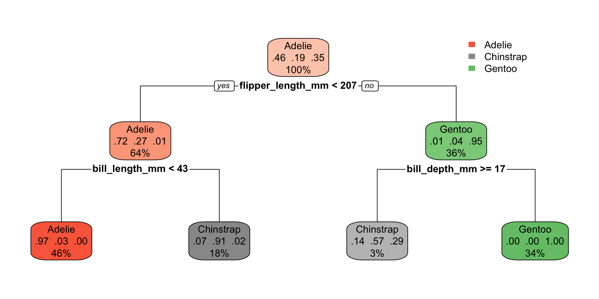
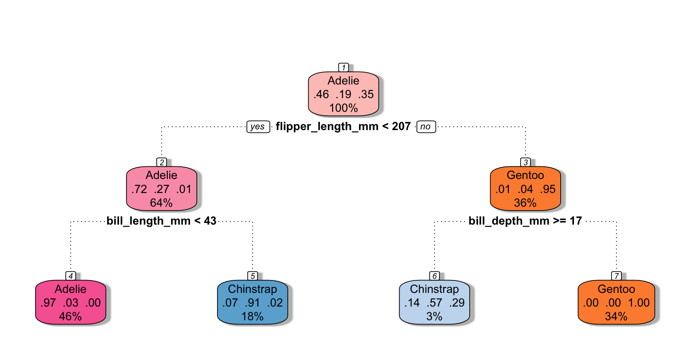
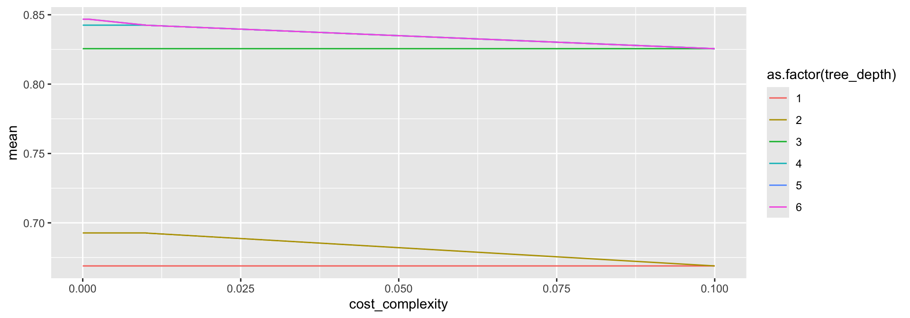
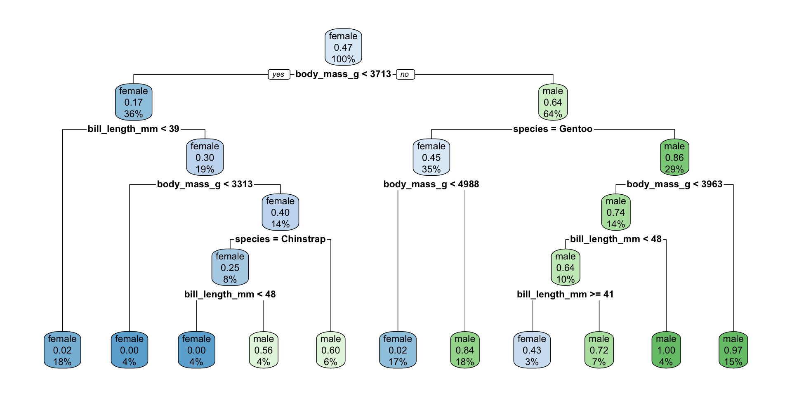

Decision Trees
October 28, 2024
Agenda 10/28/24
- Decision Trees
- Example
tidymodels syntax
- partition the data
- build a recipe
- select a model
- create a workflow
- fit the model
- validate the model
Decision trees in action
Yee and Chu created a step-by-step build of a recursive binary tree to model the differences between homes in SF and homes in NYC. http://www.r2d3.us/visual-intro-to-machine-learning-part-1/
Classification and Regression Trees (CART)
Basic Classification and Regression Trees (CART) Algorithm:
- Start with all observations in one group.
- Find the variable/split that best separates the response variable (successive binary partitions based on the different predictors / explanatory variables).
- Evaluation “homogeneity” within each group
- Divide the data into two groups (“leaves”) on that split (“node”).
- Within each split, find the best variable/split that separates the outcomes.
- Continue until the groups are too small or sufficiently “pure”.
- Prune tree.
Minimize heterogeneity
For every observation that falls into the region \(R_m\),
prediction = the mean of the response values for observations in \(R_m\).
\(\Rightarrow\) Minimize Residual Sum of Squares (RSS): \[RSS = \sum_{m=1}^{|T|} \sum_{i \in R_m} (y_i - \overline{y}_{R_m})^2\] where \(\overline{y}_{R_m}\) is the mean response for observations within the \(m\)th region.
Recursive binary splitting
Select the predictor \(X_j\) and the cutpoint \(s\) such that splitting the predictor space into the regions \(\{X | X_j< s\}\) and \(\{X | X_j \geq s\}\) lead to the greatest reduction in RSS.
For any \(j\) and \(s\), define the pair of half-planes to be \[R_1(j,s) = \{X | X_j < s\} \mbox{ and } R_2(j,s) = \{X | X_j \geq s\}\] Find the value of \(j\) and \(s\) that minimize the equation: \[\sum_{i:x_i \in R_1(j,s)} (y_i - \overline{y}_{R_1})^2 + \sum_{i:x_i \in R_2(j,s)} (y_i - \overline{y}_{R_2})^2\]
where \(\overline{y}_{R_1}\) is the mean response for observations in \(R_1(j,s)\) and \(\overline{y}_{R_2}\) is the mean response observations in \(R_2(j,s)\).
Trees in action

Measures of impurity
\(\hat{p}_{mk}\) = proportion of observations in the \(m\)th region from the \(k\)th class.
- classification error rate = fraction of observations in the node & not in the most common class:
\[E_m = 1 - \max_k(\hat{p}_{mk})\]
Gini index \[G_m= \sum_{k=1}^K \hat{p}_{mk}(1-\hat{p}_{mk})\]
cross-entropy \[D_m = - \sum_{k=1}^K \hat{p}_{mk} \log \hat{p}_{mk}\] (Gini index & cross-entropy will both take on a value near zero if the \(\hat{p}_{mk}\) values are all near zero or all near one.)
Recursive binary splitting
For any \(j\) and \(s\), define the pair of half-planes to be \[R_1(j,s) = \{X | X_j < s\} \mbox{ and } R_2(j,s) = \{X | X_j \geq s\}\]
Seek the value of \(j\) and \(s\) that minimize the equation: \[\begin{align} & \sum_{i:x_i \in R_1(j,s)} \sum_{k=1}^K \hat{p}_{{R_1}k}(1-\hat{p}_{{R_1}k}) + \sum_{i:x_i \in R_2(j,s)} \sum_{k=1}^K \hat{p}_{{R_2}k}(1-\hat{p}_{{R_2}k})\\ \\ \mbox{equivalently: } & \\ & n_{R_1} \sum_{k=1}^K \hat{p}_{{R_1}k}(1-\hat{p}_{{R_1}k}) + n_{R_2} \sum_{k=1}^K \hat{p}_{{R_2}k}(1-\hat{p}_{{R_2}k})\\ \end{align}\]
Stopping
We can always make the tree more “pure” by continuing the split.
Too many splits will overfit the model to the training data!
Ways to control:
cost_complexitytree_depthmin_n
Overfitting: http://www.r2d3.us/visual-intro-to-machine-learning-part-2/
Cost complexity
There is a cost to having a larger (more complex!) tree.
Define the cost complexity criterion, \(\alpha > 0:\) \[\begin{align} \mbox{numerical: } C_\alpha(T) &= \sum_{m=1}^{|T|} \sum_{i \in R_m} (y_i - \overline{y}_{R_m})^2 + \alpha \cdot |T|\\ \mbox{categorical: } C_\alpha(T) &= \sum_{m=1}^{|T|} \sum_{i \in R_m} I(y_i \ne k(m)) + \alpha \cdot |T| \end{align}\] where \(k(m)\) is the class with the majority of observations in node \(m\) and \(|T|\) is the number of terminal nodes in the tree.
- \(\alpha\) small: If \(\alpha\) is set to be small, we are saying that the risk is more worrisome than the complexity and larger trees are favored because they reduce the risk.
- \(\alpha\) large: If \(\alpha\) is set to be large, then the complexity of the tree is more worrisome and smaller trees are favored.
In practice
Consider \(\alpha\) increasing. As \(\alpha\) gets bigger, the “best” tree will be smaller.
The training error will be monotonically related to the size of the training tree.
However, the test error will not be monotonically related to the size of the training tree.
A note on \(\alpha\)
In the text (Introduction to Statistical Learning) and almost everywhere else you might look, the cost complexity is defined as in previous slides.
However, you might notice that in R the cost_complexity value is typically less than 1. From what I can tell, the value of the function that is being minimized in R is the average of the squared errors and the missclassification rate.
\[\begin{align} \mbox{numerical: } C_\alpha(T) &= \frac{1}{n}\sum_{m=1}^{|T|} \sum_{i \in R_m} (y_i - \overline{y}_{R_m})^2 + \alpha \cdot |T|\\ \mbox{categorical: } C_\alpha(T) &= \frac{1}{n}\sum_{m=1}^{|T|} \sum_{i \in R_m} I(y_i \ne k(m)) + \alpha \cdot |T| \end{align}\]
CART algorithm
Algorithm: Building a Regression Tree
- Use recursive binary splitting to grow a large tree on the training data, stopping only when each terminal node has fewer than some minimum number of observations.
- Apply cost complexity pruning to the large tree in order to obtain a sequence of best subtrees, as a function of \(\alpha\).
- Use \(V\)-fold cross-validation to choose \(\alpha\). Divide the training observations into \(V\) folds, then for each \(v=1, 2, \ldots, V\):
- Repeat Steps 1 and 2 on all but the \(v\)th fold of the training data.
- Evaluate the mean squared prediction error on the data in the left-out \(k\)th fold, as a function of \(\alpha\). For each value of \(\alpha\), average the prediction error (either misclassification or RSS), and pick \(\alpha\) to minimize the average error.
- Return the subtree from Step 2 that corresponds to the chosen value of \(\alpha\).
CART example w defaults
penguin_cart_recipe <-
recipe(species ~ . ,
data = penguin_train) |>
step_unknown(sex, new_level = "unknown") |>
step_mutate(year = as.factor(year))
penguin_cart_recipe── Recipe ──────────────────────────────────────────────────────────────────────── Inputs Number of variables by roleoutcome: 1
predictor: 7── Operations • Unknown factor level assignment for: sex• Variable mutation for: as.factor(year)penguin_cart <- decision_tree() |>
set_engine("rpart") |>
set_mode("classification")
penguin_cartDecision Tree Model Specification (classification)
Computational engine: rpart penguin_cart_wflow <- workflow() |>
add_model(penguin_cart) |>
add_recipe(penguin_cart_recipe)
penguin_cart_wflow══ Workflow ════════════════════════════════════════════════════════════════════
Preprocessor: Recipe
Model: decision_tree()
── Preprocessor ────────────────────────────────────────────────────────────────
2 Recipe Steps
• step_unknown()
• step_mutate()
── Model ───────────────────────────────────────────────────────────────────────
Decision Tree Model Specification (classification)
Computational engine: rpart penguin_cart_fit <- penguin_cart_wflow |>
fit(data = penguin_train)
penguin_cart_fit ══ Workflow [trained] ══════════════════════════════════════════════════════════
Preprocessor: Recipe
Model: decision_tree()
── Preprocessor ────────────────────────────────────────────────────────────────
2 Recipe Steps
• step_unknown()
• step_mutate()
── Model ───────────────────────────────────────────────────────────────────────
n= 258
node), split, n, loss, yval, (yprob)
* denotes terminal node
1) root 258 139 Adelie (0.461240310 0.189922481 0.348837209)
2) flipper_length_mm< 206.5 164 46 Adelie (0.719512195 0.274390244 0.006097561)
4) bill_length_mm< 43.15 118 3 Adelie (0.974576271 0.025423729 0.000000000) *
5) bill_length_mm>=43.15 46 4 Chinstrap (0.065217391 0.913043478 0.021739130) *
3) flipper_length_mm>=206.5 94 5 Gentoo (0.010638298 0.042553191 0.946808511)
6) bill_depth_mm>=17.15 7 3 Chinstrap (0.142857143 0.571428571 0.285714286) *
7) bill_depth_mm< 17.15 87 0 Gentoo (0.000000000 0.000000000 1.000000000) *penguin_cart_fit |>
predict(new_data = penguin_train) |>
cbind(penguin_train) |>
select(.pred_class, species) |>
table() species
.pred_class Adelie Chinstrap Gentoo
Adelie 115 3 0
Chinstrap 4 46 3
Gentoo 0 0 87Plotting the tree (not tidy)
library(rpart.plot)
penguins_cart_plot <-
penguin_cart_fit |>
extract_fit_parsnip()
rpart.plot(
penguins_cart_plot$fit,
roundint = FALSE) 
library(rattle)
penguins_cart_plot <-
penguin_cart_fit |>
extract_fit_parsnip()
fancyRpartPlot(
penguins_cart_plot$fit,
sub = NULL,
palettes = "RdPu")
CART example w CV
penguin_cart_tune_recipe <-
recipe(sex ~ body_mass_g + bill_length_mm + species,
data = penguin_train) set.seed(470)
penguin_vfold <- vfold_cv(penguin_train,
v = 5, strata = sex)cart_grid <- expand.grid(
cost_complexity = c(0, 10^(seq(-5,-1,1))),
tree_depth = seq(1,6, by = 1))
cart_grid cost_complexity tree_depth
1 0e+00 1
2 1e-05 1
3 1e-04 1
4 1e-03 1
5 1e-02 1
6 1e-01 1
7 0e+00 2
8 1e-05 2
9 1e-04 2
10 1e-03 2
11 1e-02 2
12 1e-01 2
13 0e+00 3
14 1e-05 3
15 1e-04 3
16 1e-03 3
17 1e-02 3
18 1e-01 3
19 0e+00 4
20 1e-05 4
21 1e-04 4
22 1e-03 4
23 1e-02 4
24 1e-01 4
25 0e+00 5
26 1e-05 5
27 1e-04 5
28 1e-03 5
29 1e-02 5
30 1e-01 5
31 0e+00 6
32 1e-05 6
33 1e-04 6
34 1e-03 6
35 1e-02 6
36 1e-01 6penguin_cart_tune <-
decision_tree(cost_complexity = tune(),
tree_depth = tune()) |>
set_engine("rpart") |>
set_mode("classification")
penguin_cart_wflow_tune <- workflow() |>
add_model(penguin_cart_tune) |>
add_recipe(penguin_cart_tune_recipe)penguin_tuned <- penguin_cart_wflow_tune |>
tune_grid(resamples = penguin_vfold,
grid = cart_grid)
penguin_tuned |> collect_metrics() |>
filter(.metric == "accuracy") |>
arrange(desc(mean))# A tibble: 36 × 8
cost_complexity tree_depth .metric .estimator mean n std_err .config
<dbl> <dbl> <chr> <chr> <dbl> <int> <dbl> <chr>
1 0 5 accuracy binary 0.847 5 0.0203 Preproces…
2 0.00001 5 accuracy binary 0.847 5 0.0203 Preproces…
3 0.0001 5 accuracy binary 0.847 5 0.0203 Preproces…
4 0.001 5 accuracy binary 0.847 5 0.0203 Preproces…
5 0 6 accuracy binary 0.847 5 0.0203 Preproces…
6 0.00001 6 accuracy binary 0.847 5 0.0203 Preproces…
7 0.0001 6 accuracy binary 0.847 5 0.0203 Preproces…
8 0.001 6 accuracy binary 0.847 5 0.0203 Preproces…
9 0 4 accuracy binary 0.843 5 0.0216 Preproces…
10 0.00001 4 accuracy binary 0.843 5 0.0216 Preproces…
# ℹ 26 more rowsParameter choice
(Hard to see because tree_depth = 6 is on top of tree_depth = 5, either would be fine to choose.)
penguin_tuned |>
collect_metrics() |>
filter(.metric == "accuracy") |>
ggplot(aes(x = cost_complexity, y = mean,
color = as.factor(tree_depth))) +
geom_line()
penguin_tuned |>
select_best(metric = "accuracy")# A tibble: 1 × 3
cost_complexity tree_depth .config
<dbl> <dbl> <chr>
1 0 5 Preprocessor1_Model25Best model – using CV params
penguin_opt <- decision_tree(cost_complexity = 0,
tree_depth = 5) |>
set_engine("rpart") |>
set_mode("classification")
penguin_optDecision Tree Model Specification (classification)
Main Arguments:
cost_complexity = 0
tree_depth = 5
Computational engine: rpart penguin_final_opt <-
workflow() |>
add_model(penguin_opt) |>
add_recipe(penguin_cart_tune_recipe) |>
fit(data = penguin_train)Best model – using finalize_model()
penguin_best <- finalize_model(
penguin_cart_tune,
select_best(penguin_tuned, metric = "accuracy"))
workflow() |>
add_model(penguin_best) |>
add_recipe(penguin_cart_tune_recipe) |>
fit(data = penguin_train)══ Workflow [trained] ══════════════════════════════════════════════════════════
Preprocessor: Recipe
Model: decision_tree()
── Preprocessor ────────────────────────────────────────────────────────────────
0 Recipe Steps
── Model ───────────────────────────────────────────────────────────────────────
n=248 (10 observations deleted due to missingness)
node), split, n, loss, yval, (yprob)
* denotes terminal node
1) root 248 116 female (0.53225806 0.46774194)
2) body_mass_g< 3712.5 90 15 female (0.83333333 0.16666667)
4) bill_length_mm< 38.95 44 1 female (0.97727273 0.02272727) *
5) bill_length_mm>=38.95 46 14 female (0.69565217 0.30434783)
10) body_mass_g< 3312.5 11 0 female (1.00000000 0.00000000) *
11) body_mass_g>=3312.5 35 14 female (0.60000000 0.40000000)
22) species=Chinstrap 20 5 female (0.75000000 0.25000000)
44) bill_length_mm< 48.3 11 0 female (1.00000000 0.00000000) *
45) bill_length_mm>=48.3 9 4 male (0.44444444 0.55555556) *
23) species=Adelie 15 6 male (0.40000000 0.60000000) *
3) body_mass_g>=3712.5 158 57 male (0.36075949 0.63924051)
6) species=Gentoo 86 39 female (0.54651163 0.45348837)
12) body_mass_g< 4987.5 41 1 female (0.97560976 0.02439024) *
13) body_mass_g>=4987.5 45 7 male (0.15555556 0.84444444) *
7) species=Adelie,Chinstrap 72 10 male (0.13888889 0.86111111)
14) body_mass_g< 3962.5 35 9 male (0.25714286 0.74285714)
28) bill_length_mm< 48.3 25 9 male (0.36000000 0.64000000)
56) bill_length_mm>=40.85 7 3 female (0.57142857 0.42857143) *
57) bill_length_mm< 40.85 18 5 male (0.27777778 0.72222222) *
29) bill_length_mm>=48.3 10 0 male (0.00000000 1.00000000) *
15) body_mass_g>=3962.5 37 1 male (0.02702703 0.97297297) *Best Model Predictions
You get the same model whether you use the CV parameters that you found or whether you use finalize_model() to pull out the CV parameters.
workflow() |>
add_model(penguin_opt) |>
add_recipe(penguin_cart_tune_recipe) |>
fit(data = penguin_train) |>
predict(new_data = penguin_test) |>
cbind(penguin_test) |>
select(.pred_class, sex) |>
table() sex
.pred_class female male
female 26 5
male 7 47workflow() |>
add_model(penguin_best) |>
add_recipe(penguin_cart_tune_recipe) |>
fit(data = penguin_train) |>
predict(new_data = penguin_test) |>
cbind(penguin_test) |>
select(.pred_class, sex) |>
table() sex
.pred_class female male
female 26 5
male 7 47Best Model Predictions
library(rpart.plot)
penguins_cart_plot <-
workflow() |>
add_model(penguin_best) |>
add_recipe(penguin_cart_tune_recipe) |>
fit(data = penguin_train) |>
extract_fit_parsnip()
rpart.plot(
penguins_cart_plot$fit,
roundint = FALSE) 
Bias-Variance Tradeoff
Variance refers to the amount by which would change if we estimated it using a different training set. Generally, the closer the model fits the (training) data, the more variable it will be (it will be different for each data set!). A model with many many explanatory variables will often fit the data too closely.
Bias refers to the error that is introduced by approximating the “truth” by a model which is too simple. For example, we often use linear models to describe complex relationships, but it is unlikely that any real life situation actually has a true linear model. However, if the true relationship is close to linear, then the linear model will have a low bias.
an excellent resource for explaining the bias-variance trade-off: http://scott.fortmann-roe.com/docs/BiasVariance.html
Bias-Variance Tradeoff
| model | high bias (too simple) |
high variance (overfit training data) |
|---|---|---|
| linear model | one (zero!) predictor | many many predictors |
| \(k\)-NN | \(k = n\) | \(k = 1\) |
| CART | one split | single observation in every terminal node |
Bias-Variance Tradeoff

Reflecting on Model Building

Reflecting on Model Building

Reflecting on Model Building